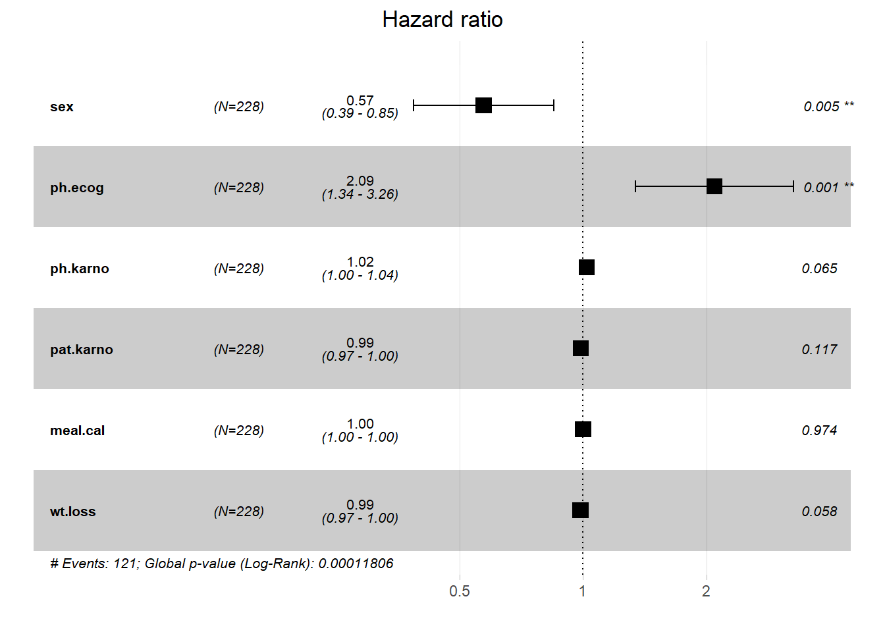

Survival analysis
The lung dataset
- inst: Institution code
- time: Survival time in days
- status: censoring status
- 1=censored,
- 2=dead
- age: Age in years
- sex:
- Male=1
- Female=2
- ph.ecog: ECOG performance score (0=good 5=dead)
- ph.karno: Karnofsky performance score (bad=0-good=100) rated by physician
- pat.karno: Karnofsky performance score as rated by patient
- meal.cal: Calories consumed at meals
- wt.loss: Weight loss in last six months
| inst | time | status | age | sex | ph.ecog | ph.karno | pat.karno | meal.cal | wt.loss |
|---|---|---|---|---|---|---|---|---|---|
| 3 | 306 | 2 | 74 | 1 | 1 | 90 | 100 | 1175 | NA |
| 3 | 455 | 2 | 68 | 1 | 0 | 90 | 90 | 1225 | 15 |
| 3 | 1010 | 1 | 56 | 1 | 0 | 90 | 90 | NA | 15 |
| 5 | 210 | 2 | 57 | 1 | 1 | 90 | 60 | 1150 | 11 |
| 1 | 883 | 2 | 60 | 1 | 0 | 100 | 90 | NA | 0 |
| 12 | 1022 | 1 | 74 | 1 | 1 | 50 | 80 | 513 | 0 |
What is censoring?
Censoring occurs if a subject leave the study without experiencing the event
Types of censoring
Left censoring:
The subject has experienced the event before enrollment
Right censoring:
- Loss to follow-up
- Withdraw from the study
- Survive to the end of the study
In this lab, we focus on right censoring
Components of survival data
There are four components in survival data:
For any individual i:
- Event time \(T_i\)
- Censoring time \(C_i\)
- Event indicator \(\delta_i\)
- Observed time \(Y_i=min(T_i,C_i)\)
Event indicator
The event indicator \(\delta_i\) was defined as a binary data
- \(\delta_i=1\) if \(T_i \leq C_i\)
- \(\delta_i=0\) if \(T_i > C_i\)
Survival function
Survival function represents the probability that an individual will survival past time \(t\)
\(S(t) = Pr(T>t)=1-F(t)\), where \(F(t)\) is the cumulative distribution function.
Survival probability
Given that a subject is still alive just before time \(t\), the survival probability \(S(t)\) represents the probability of surviving beyond time \(t\). We could plot survival probability in lung dataset
Creating survival objects
A survival object is the survival time and can be used as the “response” in survival analysis. To estimate \(S(t)\), we usually use the non-parametric method called Kaplan-Meier method. In R, we can use “Surv” in survival package to create survival objects. Let us take a look at the first 10 subjects in lung dataset. The numbers are the survival time for each individual, \(+\) indicates that the observation has been censored
Estimating survival curves with the Kaplan-Meier method
“survfit” in survival package can help us to estimate survival curves using KM method
Show the code
f1 <- survfit(Surv(time, status) ~ 1, data = lung)
# Surv(time, status) is the survival object we just introduced
# show the objects in the f1
names(f1)
#> [1] "n" "time" "n.risk" "n.event" "n.censor" "surv"
#> [7] "std.err" "cumhaz" "std.chaz" "type" "logse" "conf.int"
#> [13] "conf.type" "lower" "upper" "call"Kaplan-Meier plot
We could plot the above fitting to have a KM plot in R
Show the code
Show the code
Show the code
Estimating median survival time
Usually, the survival time will not be normally (or symmetrically) distributed. Therefore, mean is not a good summary for survival time. Instead, we use median to estimate. “survfit” in survival package present the summary of median
Comparing survival times between groups
We could use log-rank test to test whether there exists significant difference in survival time between groups. The log-rank test put the same weights on every observation. It could be done in R use “survdiff” from survival package
The results indicated that the survival time depends on the sex (p-value = 0.001); e.g., associated with sex variable.
The Cox regression model
The Cox regression model (aka Cox proportional-hazard model) is semi-parametric model to quantify the effect size in survival analysis.
-
\(h(t|X_i)=h_0(t)exp(\beta_0+\beta_1X_{i1}+\beta_2X_{i2}+\beta_3X_{i3}+...+\beta_pX_{ip})\), where
- \(h_0(t)\) is the baseline hazard and
- \(h(t)\) is the hazard at time \(t\)
In R, we have “coxph” from survival package to fit a Cox PH model
Show the code
fit <- coxph(Surv(time, status) ~ sex, data = lung) # add sex as covariate
summary(fit)
#> Call:
#> coxph(formula = Surv(time, status) ~ sex, data = lung)
#>
#> n= 228, number of events= 165
#>
#> coef exp(coef) se(coef) z Pr(>|z|)
#> sex -0.5310 0.5880 0.1672 -3.176 0.00149 **
#> ---
#> Signif. codes: 0 '***' 0.001 '**' 0.01 '*' 0.05 '.' 0.1 ' ' 1
#>
#> exp(coef) exp(-coef) lower .95 upper .95
#> sex 0.588 1.701 0.4237 0.816
#>
#> Concordance= 0.579 (se = 0.021 )
#> Likelihood ratio test= 10.63 on 1 df, p=0.001
#> Wald test = 10.09 on 1 df, p=0.001
#> Score (logrank) test = 10.33 on 1 df, p=0.001
require(Publish)
publish(fit)
#> Variable Units HazardRatio CI.95 p-value
#> sex 0.59 [0.42;0.82] 0.00149More variables
Show the code
fit <- coxph(Surv(time, status) ~ sex + ph.ecog +
ph.karno + pat.karno + meal.cal + wt.loss,
data = lung) # add more covariates
summary(fit)
#> Call:
#> coxph(formula = Surv(time, status) ~ sex + ph.ecog + ph.karno +
#> pat.karno + meal.cal + wt.loss, data = lung)
#>
#> n= 168, number of events= 121
#> (60 observations deleted due to missingness)
#>
#> coef exp(coef) se(coef) z Pr(>|z|)
#> sex -5.571e-01 5.729e-01 2.003e-01 -2.782 0.00541 **
#> ph.ecog 7.377e-01 2.091e+00 2.260e-01 3.264 0.00110 **
#> ph.karno 2.041e-02 1.021e+00 1.108e-02 1.842 0.06549 .
#> pat.karno -1.263e-02 9.874e-01 8.062e-03 -1.567 0.11707
#> meal.cal -8.303e-06 1.000e+00 2.567e-04 -0.032 0.97420
#> wt.loss -1.460e-02 9.855e-01 7.708e-03 -1.894 0.05820 .
#> ---
#> Signif. codes: 0 '***' 0.001 '**' 0.01 '*' 0.05 '.' 0.1 ' ' 1
#>
#> exp(coef) exp(-coef) lower .95 upper .95
#> sex 0.5729 1.7456 0.3869 0.8483
#> ph.ecog 2.0910 0.4782 1.3427 3.2565
#> ph.karno 1.0206 0.9798 0.9987 1.0430
#> pat.karno 0.9874 1.0127 0.9720 1.0032
#> meal.cal 1.0000 1.0000 0.9995 1.0005
#> wt.loss 0.9855 1.0147 0.9707 1.0005
#>
#> Concordance= 0.656 (se = 0.029 )
#> Likelihood ratio test= 27.47 on 6 df, p=1e-04
#> Wald test = 27.02 on 6 df, p=1e-04
#> Score (logrank) test = 27.82 on 6 df, p=1e-04Formatting Cox regression results
To format the Cox regression results into a nice table format, we could use “tidy” (broom package).
Show the code
library(broom)
library(tidyverse)
summary(fit)
#> Call:
#> coxph(formula = Surv(time, status) ~ sex + ph.ecog + ph.karno +
#> pat.karno + meal.cal + wt.loss, data = lung)
#>
#> n= 168, number of events= 121
#> (60 observations deleted due to missingness)
#>
#> coef exp(coef) se(coef) z Pr(>|z|)
#> sex -5.571e-01 5.729e-01 2.003e-01 -2.782 0.00541 **
#> ph.ecog 7.377e-01 2.091e+00 2.260e-01 3.264 0.00110 **
#> ph.karno 2.041e-02 1.021e+00 1.108e-02 1.842 0.06549 .
#> pat.karno -1.263e-02 9.874e-01 8.062e-03 -1.567 0.11707
#> meal.cal -8.303e-06 1.000e+00 2.567e-04 -0.032 0.97420
#> wt.loss -1.460e-02 9.855e-01 7.708e-03 -1.894 0.05820 .
#> ---
#> Signif. codes: 0 '***' 0.001 '**' 0.01 '*' 0.05 '.' 0.1 ' ' 1
#>
#> exp(coef) exp(-coef) lower .95 upper .95
#> sex 0.5729 1.7456 0.3869 0.8483
#> ph.ecog 2.0910 0.4782 1.3427 3.2565
#> ph.karno 1.0206 0.9798 0.9987 1.0430
#> pat.karno 0.9874 1.0127 0.9720 1.0032
#> meal.cal 1.0000 1.0000 0.9995 1.0005
#> wt.loss 0.9855 1.0147 0.9707 1.0005
#>
#> Concordance= 0.656 (se = 0.029 )
#> Likelihood ratio test= 27.47 on 6 df, p=1e-04
#> Wald test = 27.02 on 6 df, p=1e-04
#> Score (logrank) test = 27.82 on 6 df, p=1e-04
require(Publish)
publish(fit)
#> Variable Units Missing HazardRatio CI.95 p-value
#> sex 0 0.57 [0.39;0.85] 0.00541
#> ph.ecog 1 2.09 [1.34;3.26] 0.00110
#> ph.karno 1 1.02 [1.00;1.04] 0.06549
#> pat.karno 3 0.99 [0.97;1.00] 0.11707
#> meal.cal 47 1.00 [1.00;1.00] 0.97420
#> wt.loss 14 0.99 [0.97;1.00] 0.05820
kable(broom::tidy(fit, exp = TRUE))| term | estimate | std.error | statistic | p.value |
|---|---|---|---|---|
| sex | 0.5728725 | 0.2002798 | -2.7815687 | 0.0054097 |
| ph.ecog | 2.0910352 | 0.2260265 | 3.2635959 | 0.0011001 |
| ph.karno | 1.0206185 | 0.0110803 | 1.8418903 | 0.0654912 |
| pat.karno | 0.9874450 | 0.0080618 | -1.5672047 | 0.1170668 |
| meal.cal | 0.9999917 | 0.0002567 | -0.0323431 | 0.9741984 |
| wt.loss | 0.9855065 | 0.0077076 | -1.8941781 | 0.0582014 |
| term | estimate | std.error | statistic | p.value |
|---|---|---|---|---|
| sex | 0.57 | 0.20 | -2.78 | 0.01 |
| ph.ecog | 2.09 | 0.23 | 3.26 | 0.00 |
| ph.karno | 1.02 | 0.01 | 1.84 | 0.07 |
| pat.karno | 0.99 | 0.01 | -1.57 | 0.12 |
| meal.cal | 1.00 | 0.00 | -0.03 | 0.97 |
| wt.loss | 0.99 | 0.01 | -1.89 | 0.06 |
Show the code
require(survminer)
#> Loading required package: survminer
#> Warning: package 'survminer' was built under R version 4.3.1
#> Loading required package: ggpubr
#> Warning: package 'ggpubr' was built under R version 4.3.1
#>
#> Attaching package: 'survminer'
#> The following object is masked from 'package:survival':
#>
#> myeloma
ggforest(fit, data = lung)
Hazard ratios
- In Cox regression model, the quantity we interested is the hazard ratio, which is the ratio of hazards in two different groups (i.e., exposed vs unexposed).
- Hazard ratio at time \(t\) is denoted by \(HR=\frac{h_1(t)}{h_0(t)}\) where \(h(t)\) is the hazard function representing the instantaneous rate that the first event may occur.
- Hazard ratio is not a risk, and it can estimated by exponatial the estimated coefficients (i.e., \(exp(\beta)\)).
- In the above Cox model, the HR is 0.59 which indicated that the hazard in Female is smaller than Male.
- In generally, a \(HR>1\) indicates a higher hazard, and \(HR<1\) indicated a reduced hazard.
Assessing proportional hazards
- As mentioned before, the Cox model is also called as Cox proportional hazard model.
- The assumption made here is the hazards in both group are proportional.
- The easiest way of assessing proportional hazard assumption is to use “cox.zph”
- This function uses the Schoenfeld residuals against the transformed time.
- Ideally, this checks if the hazard rate of an individual is relatively constant in time.
Show the code
- Here, p-value is greater than 0.05, there is no evidence against PH assumption.
- Having very small p values (say, 0.001) indicates that there may be time dependent coefficients which the modelling needs to take care of.
Time-dependent covariate
Time-dependent covariate occurs when individual’s covariate values are may be different at different time (measured repeatedly over time).
Data setup
Show the code
# Create a simple data set for a time-dependent model
# See ?coxph
test.data <- list(start=c(1, 2, 5, 2, 1, 7, 3, 4, 8, 8),
stop =c(2, 3, 6, 7, 8, 9, 9, 9,14,17),
event=c(1, 1, 1, 1, 1, 1, 1, 0, 0, 0),
tx =c(1, 0, 0, 1, 0, 1, 1, 1, 0, 0) )
test.data
#> $start
#> [1] 1 2 5 2 1 7 3 4 8 8
#>
#> $stop
#> [1] 2 3 6 7 8 9 9 9 14 17
#>
#> $event
#> [1] 1 1 1 1 1 1 1 0 0 0
#>
#> $tx
#> [1] 1 0 0 1 0 1 1 1 0 0
as.data.frame(test.data)Time-dependent covariate - Cox regression
Show the code
fit.td <- coxph( Surv(start, stop, event) ~ tx, test.data)
summary(fit.td)
#> Call:
#> coxph(formula = Surv(start, stop, event) ~ tx, data = test.data)
#>
#> n= 10, number of events= 7
#>
#> coef exp(coef) se(coef) z Pr(>|z|)
#> tx -0.02111 0.97912 0.79518 -0.027 0.979
#>
#> exp(coef) exp(-coef) lower .95 upper .95
#> tx 0.9791 1.021 0.2061 4.653
#>
#> Concordance= 0.526 (se = 0.129 )
#> Likelihood ratio test= 0 on 1 df, p=1
#> Wald test = 0 on 1 df, p=1
#> Score (logrank) test = 0 on 1 df, p=1
publish(fit.td)
#> Variable Units HazardRatio CI.95 p-value
#> tx 0.98 [0.21;4.65] 0.979Survival analysis in Complex Survey data
- Example data from GitHub.
- Below we created the design
Data and Variables
- MORTSTAT: Final Mortality Status
- 0 Assumed alive
- 1 Assumed deceased
- Blank Ineligible for mortality follow-up or under age 17
- PERMTH_EXM: Person Months of Follow-up from MEC/Home Exam Date
- 0 - 217
- Blank Ineligible
- PERMTH_INT: Person Months of Follow-up from Interview Date
Data issues
Show the code
with(analytic.miss[1:30,],
Surv(PERMTH_EXM, MORTSTAT))
#> [1] NA? 90+ NA? NA? 74+ 86+ 76+ NA? NA? 79+ NA? 82+ 16 85+ 92+ 62 NA? NA? NA?
#> [20] 86+ 87+ NA? NA? 72+ 84+ NA? 85+ 91+ 26 NA?
summary(analytic.miss$WTMEC2YR)
#> Min. 1st Qu. Median Mean 3rd Qu. Max.
#> 0 6365 15572 27245 38896 261361
# avoiding 0 weight issues
analytic.miss$WTMEC2YR[analytic.miss$WTMEC2YR == 0] <- 0.001
require(DataExplorer)
#> Loading required package: DataExplorer
#> Warning: package 'DataExplorer' was built under R version 4.3.1
plot_missing(analytic.miss)Design creation
Show the code
analytic.miss$ID <- 1:nrow(analytic.miss)
analytic.miss$miss <- 0
analytic.cc <- as.data.frame(na.omit(analytic.miss))
dim(analytic.cc)
#> [1] 10557 11
analytic.miss$miss[analytic.miss$ID %in%
analytic.cc$ID] <- 0
w.design0 <- svydesign(id=~SDMVPSU,
strata=~SDMVSTRA,
weights=~WTMEC2YR,
nest=TRUE,
data=analytic.miss)
w.design <- subset(w.design0,
miss == 0)
summary(weights(w.design))
#> Min. 1st Qu. Median Mean 3rd Qu. Max.
#> 0 6365 15572 27245 38896 261361Survival Analysis within Complex Survey
KM plot
Cox PH
Show the code
fit <- svycoxph(Surv(PERMTH_EXM, MORTSTAT) ~
white + female + RIDAGEYR,
design = w.design)
publish(fit)
#> Stratified 1 - level Cluster Sampling design (with replacement)
#> With (117) clusters.
#> subset(w.design0, miss == 0)
#> Variable Units HazardRatio CI.95 p-value
#> white 0.78 [0.66;0.93] 0.00441
#> female 0.61 [0.50;0.75] < 0.001
#> RIDAGEYR 1.09 [1.08;1.10] < 0.001PH assumption

Video content (optional)
For those who prefer a video walkthrough, feel free to watch the video below, which offers a description of an earlier version of the above content.